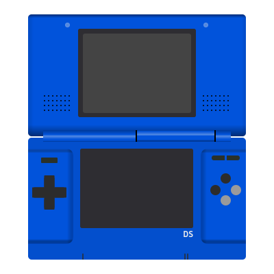

Nintendo DS
The Nintendo 3DS Family: A Revolution in Handheld Gaming
10/29/2024The Nintendo 3DS family is renowned for revolutionizing handheld gaming with its dual-screen concept and touch-based controls. Over the years, several 3DS models were released, each...
The Nintendo DS Family: A Complete Look at All Variants and Their Hardware
10/28/2024The Nintendo DS family, introduced by Nintendo in 2004, redefined the landscape of handheld gaming. Known for its unique dual-screen design, touch-sensitive interface, and innovative software, the DS and its successors built on...